Analyse et visualisation des données de l'ambroisie — Sherbrooke, Montréal, Québec
Ce tableau de bord est un outil en ligne gratuit qui permet de visualiser et d'analyser la présence de l'ambroisie (herbe à poux) sur le territoire des trois villes du projet : Sherbrooke, Montréal et Québec.
C'est un outil essentiel pour faciliter la prise de décision en matière d'éradication de cette espèce allergène.
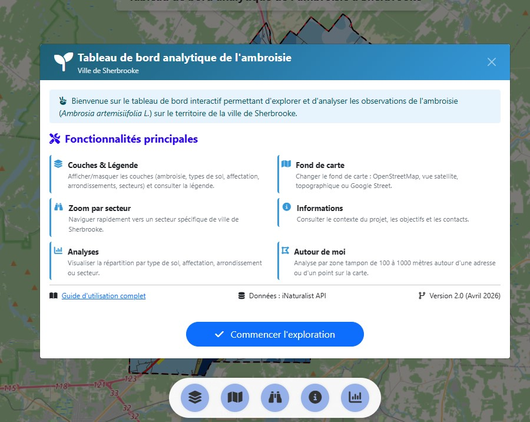
Interface principale du tableau de bord avec la carte et le panneau d'analyse
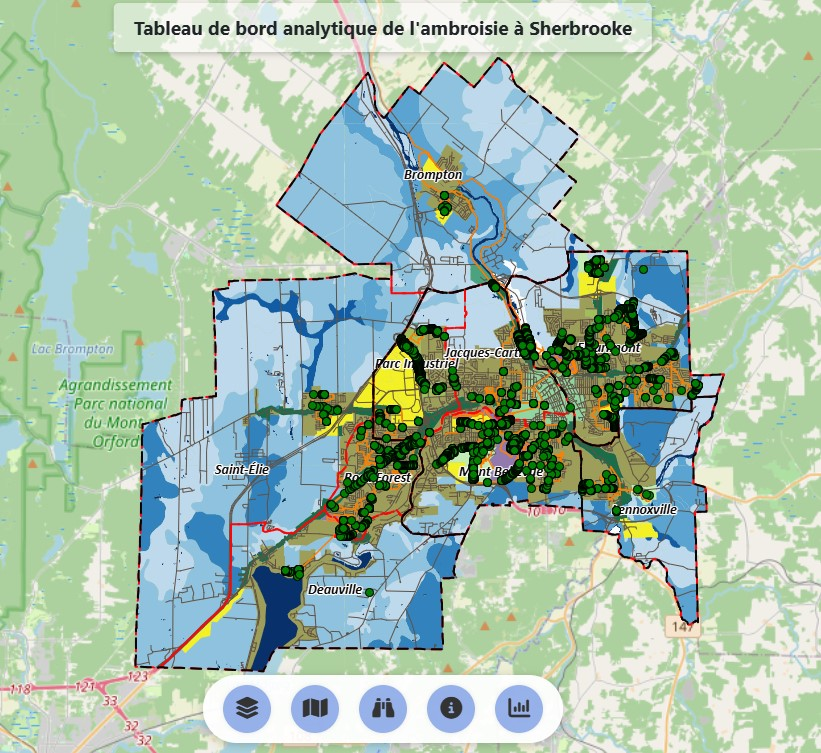
Les points verts représentent les observations d'ambroisie à Sherbrooke
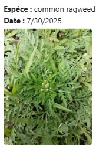
En cliquant sur un point, une fenêtre affiche la photo et la date d'observation
Panneau à gauche, carte à droite. Le panneau est redimensionnable en largeur.
Panneau en bas de l'écran, carte en haut. Idéal pour visualiser la carte en grand.
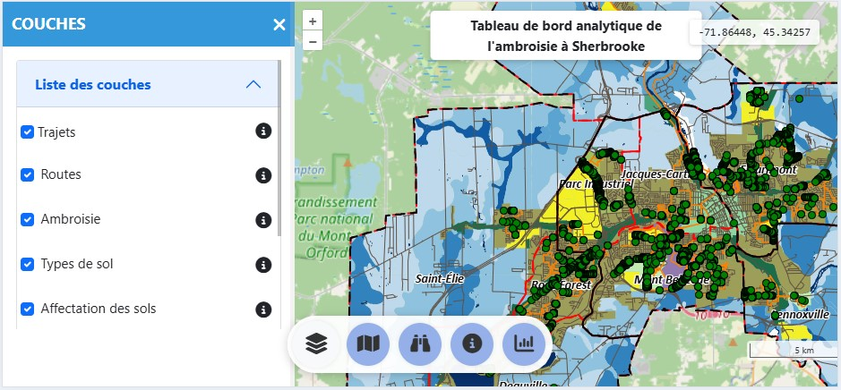
Vue sur ordinateur (panneau à gauche)
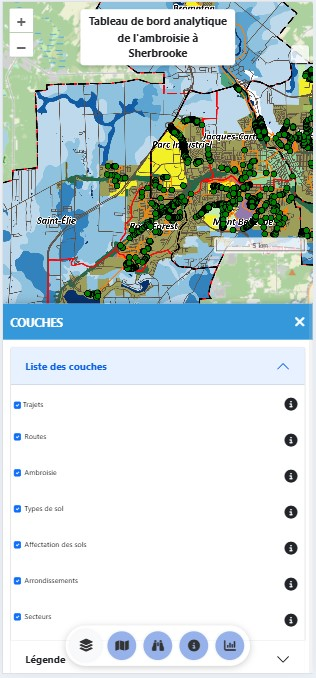
Vue sur mobile (panneau en bas)
Afficher/masquer les informations supplémentaires et comprendre les couleurs/symboles
Changer le fond de carte (OSM, satellite, topographique)
Se déplacer rapidement vers un quartier spécifique
Contexte du projet et contacts
Ouvrir les outils d'analyse statistique
| Action | Résultat |
|---|---|
| Clic gauche maintenu + déplacer | Déplacer la carte (panoramique) |
| Toucher (mobile) + glisser | Déplacer la carte |
| Molette de souris | Zoom avant/arrière |
| Pincer (mobile) | Zoom avant/arrière |
| Double-clic | Zoom centré sur l'endroit |
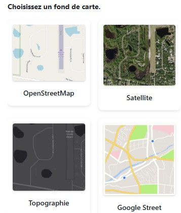
Cliquez sur l'icône → choisissez parmi 4 options : OSM, Satellite, Topographique, Google Street.
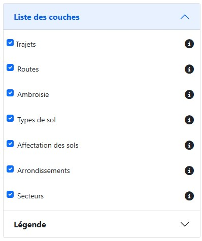
Cliquez sur l'icône → cochez/décochez les cases pour activer/désactiver les couches.
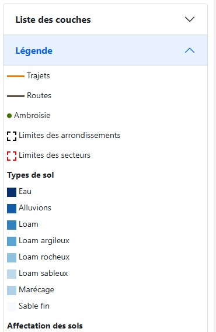
La section Légende explique la signification des couleurs et symboles pour chaque couche.
Cliquez sur l'icône pour ouvrir le panneau d'analyse. Trois onglets sont disponibles :
Comparez le nombre d'observations selon : type de sol, affectation, arrondissement ou secteur.
Astuce : Passez la souris sur une barre pour voir le nombre exact d'observations.
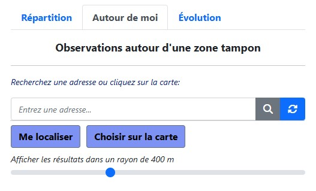
Interface complète de l'outil "Autour de moi"
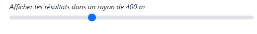
Ajustez le rayon à l'aide du curseur
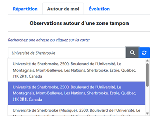
Exemple de recherche d'adresse avec suggestions
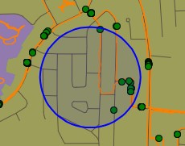
Visualisation de la zone tampon (cercle bleu)
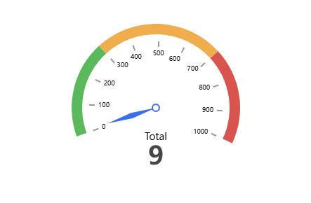
Jauge : nombre total d'observations
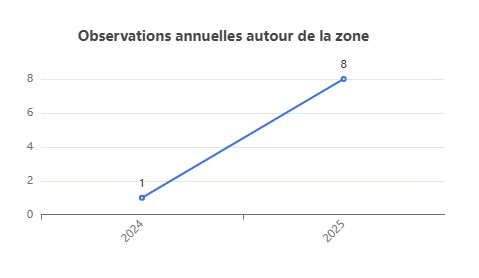
Graphique d'évolution annuelle
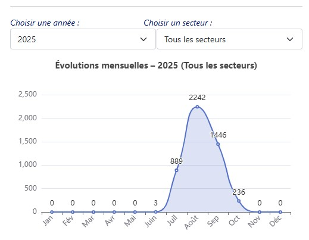
Nombre d'observations par mois (juin à octobre).
Pic : juillet à octobre (période de pollinisation).
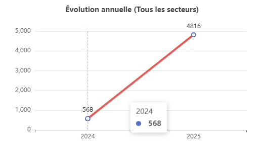
Courbe du nombre d'observations année après année.
Interprétation : Une courbe ascendante indique une progression.
Découvrez comment utiliser le tableau de bord à travers des situations réelles.
Objectif : Connaître le niveau de risque d'allergie près de chez soi
Objectif : Identifier le secteur le plus touché pour optimiser les interventions
Objectif : Comprendre les facteurs environnementaux favorisant l'ambroisie
Objectif : Sensibiliser sur les périodes à risque et l'évolution dans le temps